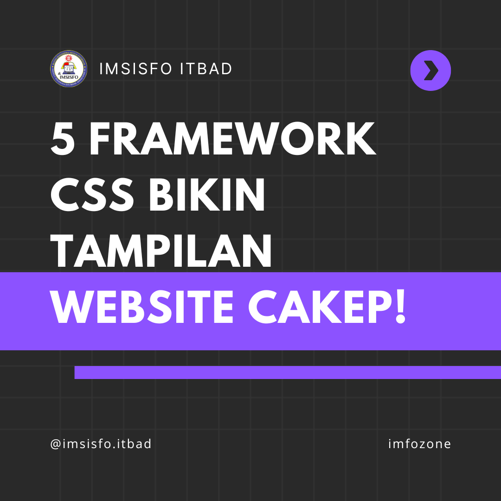
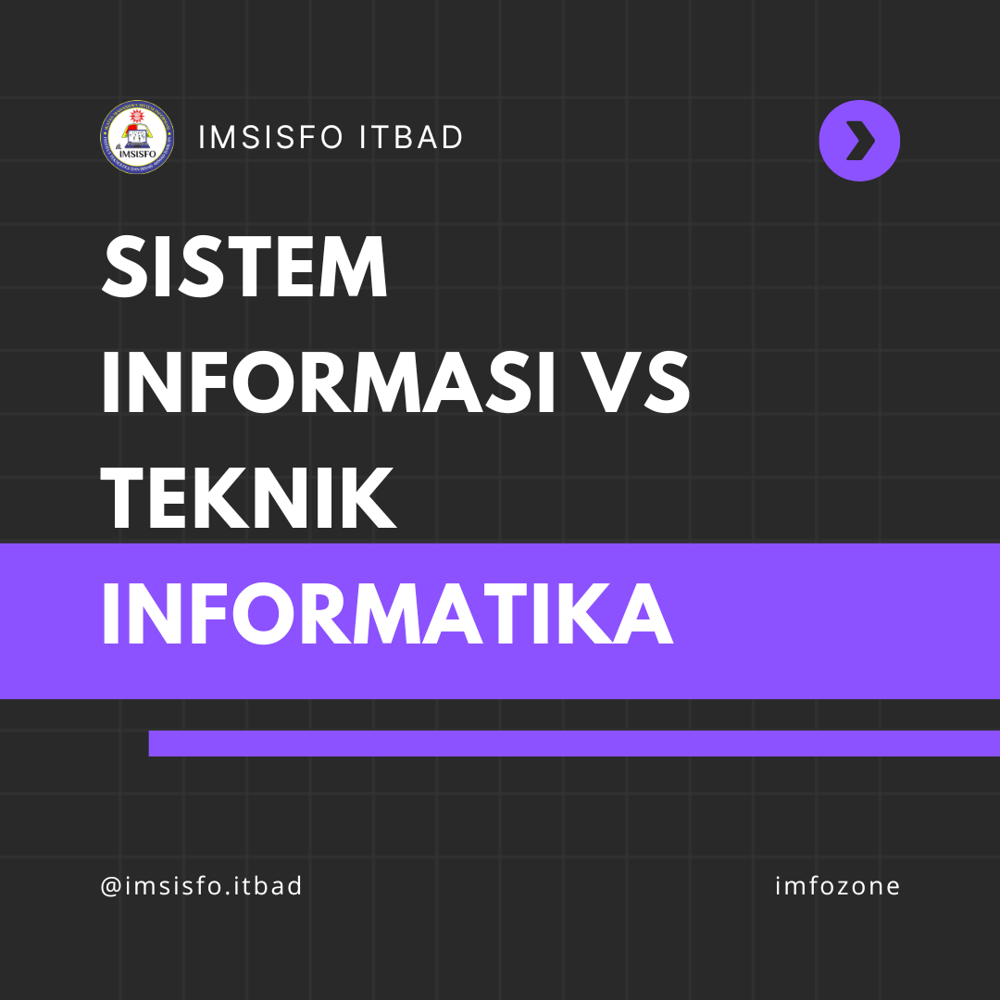
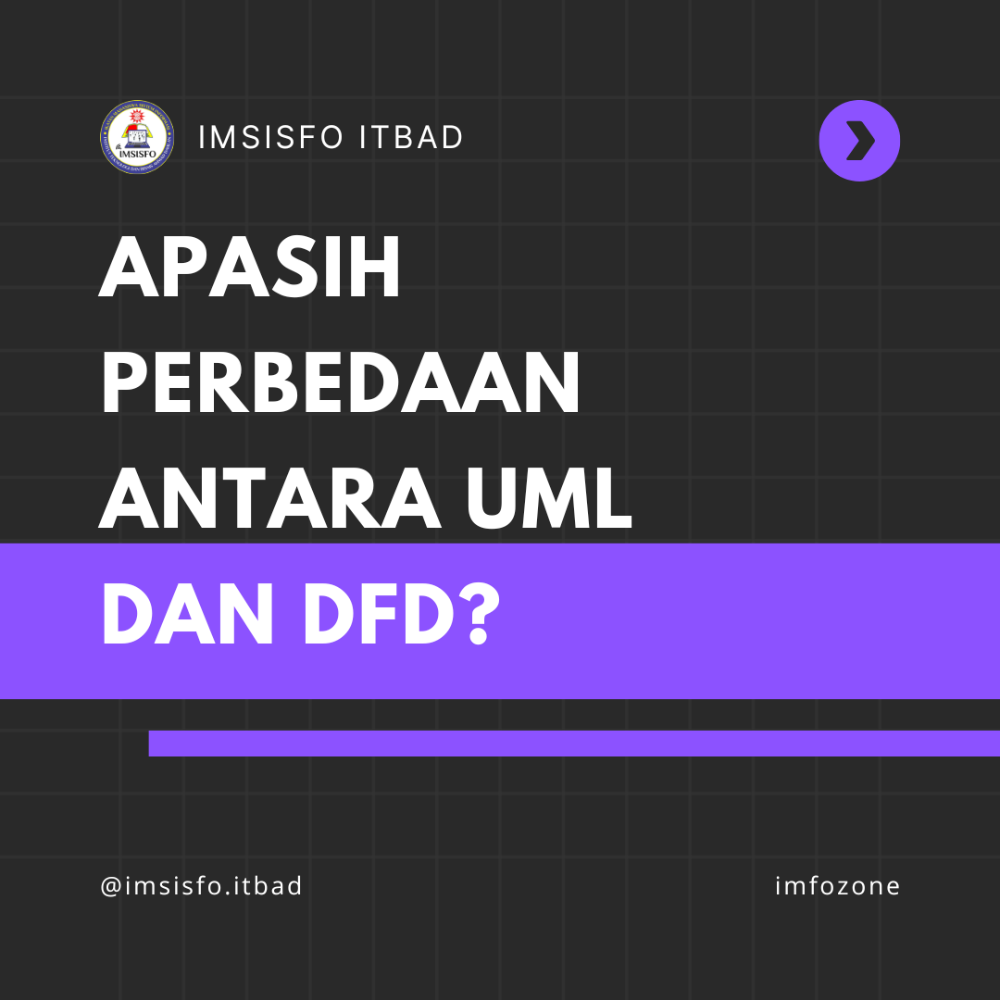

Apa itu IMSISFO?
IMSISFO adalah sebuah organisasi yang didedikasikan untuk mempertemukan, menginspirasi, dan membantu mahasiswa yang menekuni studi dalam bidang Sistem Informasi. Tujuan IMSISFO :
- Sebagai wadah diskusi mahasiswa Prodi Sistem Informasi ITB Ahmad Dahlan
- Mengembangkan kemampuan mahasiswa Prodi Sistem Informasi ITB Ahmad Dahlan.
- Mempererat jalinan persaudaraan mahasiswa Prodi Sistem Infomasi ITB Ahmad Dahlan.
- Membentuk kepribadian mahasiswa Prodi Sistem Informasi yang berjiwa Socio Technopreneur.
Organisasi ini bertujuan untuk memperkuat jaringan antara mahasiswa, memfasilitasi pertukaran pengetahuan dan pengalaman, serta meningkatkan pemahaman anggotanya tentang perkembangan terkini dalam dunia Teknologi.
Slogan kami "Generasi Muda Melek Teknologi"
Learn More
VISI
Menjadikan ikatan mahasiswa yang aktif, kreatif, dan inovatif agar bisa bersaing di dunia global, serta menjadikan generasi socio technopreneur yang berakhlak mulia.
-
01Mengembangkan kompetensi mahasiswa melaui pendidikan berbasis teknologi.
Pendidikan berbasis teknologi bertujuan untuk memperkaya dan meningkatkan kualitas pembelajaran mahasiswa dengan mengintegrasikan teknologi ke dalam kurikulum.
-
02 Mewujudkan ekonomi kreatif yang inovatif
Menciptakan ekonomi kreatif yang inovatif melibatkan pengembangan dan penerapan ide-ide kreatif dalam konteks ekonomi. Mahasiswa diajak untuk memahami peran teknologi dalam merangsang inovasi dan kreativitas.
-
03Membentuk mahasiswa yang dapat berperan dimasyarakat khususnya dibidang teknologi;
Fokus pada membentuk mahasiswa yang dapat berperan dalam masyarakat, khususnya di bidang teknologi, mengacu pada pengembangan sikap proaktif dan tanggung jawab sosial.
Departemen
Dalam struktur organisasi Ikatan Mahasiswa Sistem Informasi (IMSISFO), terdapat berbagai departemen yang memiliki peran khusus dalam mencapai tujuan organisasi. Setiap departemen berfokus pada aspek tertentu, memberikan kontribusi uniknya untuk memajukan anggotanya dan meningkatkan kualitas pengalaman belajar mereka.
Organisasi
Mengoptimalkan fungsi dan peran peran departemen agar tercapainya efisiensi dan efektivitas kerja organisasi.
PSDA
Membuat dan menerapkan strategi kaderisasi dalam organisasi untuk meningkatkan soidaritas antar anggota.
KOMINFO
Manajemen informasi dan komunikasi baik secara Internal maupun External serta mendokumentasikan seluruh kegiatan IMSISFO ITB Ahmad Dahlan
Sejarah
Organisasi IMSISFO ITB AD didirikan di Institut Teknologi dan Bisnis Ahmad Dahlan Jakarta pada tanggal 23 November 2019 bertempat di Kampus B Karawaci.
Dokumentasi
Melalui setiap kisah yang terabadikan, kita menjelajahi masa lalu, merayakan saat ini, dan merintis masa depan. Dokumentasi adalah jejak perjalanan hidup yang tak ternilai, sebuah cerita yang terukir dalam setiap frame gambar
- All
- ORGANISASI
- PSDA
- P3SI
- KOMINFO


{kind=link}
Imfozone
Imfozone hadir untuk memenuhi kehausan pengetahuan Anda. Jelajahi setiap pilihan menu dengan cerita-cerita menarik dan pengetahuan terbaru yang pastinya akan membuat Anda terinspirasi.

Programming
Mengapa kita perlu belajar Framework CSS? 27 Jan 2024Dalam era desain web yang terus berkembang, memahami dan menguasai framework CSS menjadi esensial bagi para pengembang dan desainer.
Hendrik Tarigan

Education
Bingung mau pilih SI atau TI? Yuk simak dan temukan perbedaannya!!! 28 Jan 2024Apakah Sistem Informasi dan Teknik Informatika itu sama? Jelas berbeda. Mungkin beberapa dari kita beranggapan bahwa jurusan Sistem Informasi tidak berbeda jauh dengan jurusan lain seperti Teknik Informatika. Padahal memang sangat jauh berbeda. Mungkin dengan penjabaran, kita bisa tahu apa bedanya Jurusan Sistem Informasi dengan jurusan lain.
Giffari Syawal

Tech
Apasih yang membedakan UML dengan DFD? Mari kita simak! 29 Jan 2024Mungkin Anda sering mendengar tentang UML dan DFD, tapi apa sebenarnya perbedaannya? Jangan khawatir, kita akan bahas dengan cara yang mudah dipahami!
Allan Alfarizi
Kontak
Jangan ragu untuk menghubungi kami! Kami siap mendengarkan dan menjawab pertanyaan Anda.
Lokasi:
Jl. Ir H. Juanda No.77, Cireundeu, Kec. Ciputat Tim., Kota Tangerang Selatan, Banten 15419
Email:
imsisfoitbadjkt@gmail.com
Instagram:
@imsisfo.itbad
Tiktok:
@imsisfoitbad